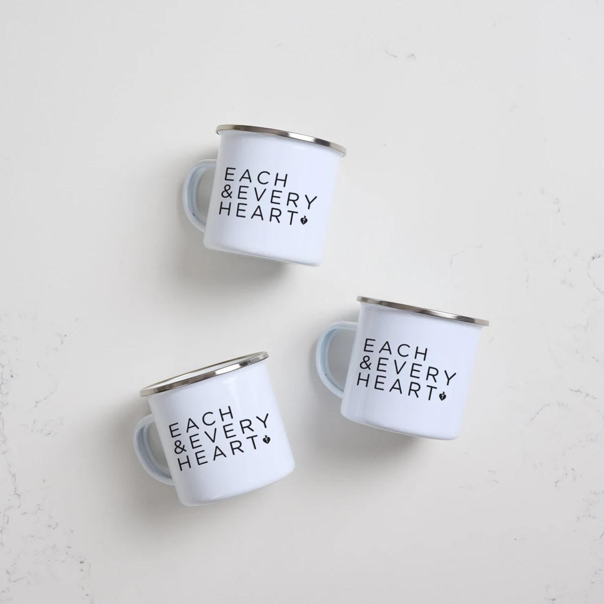
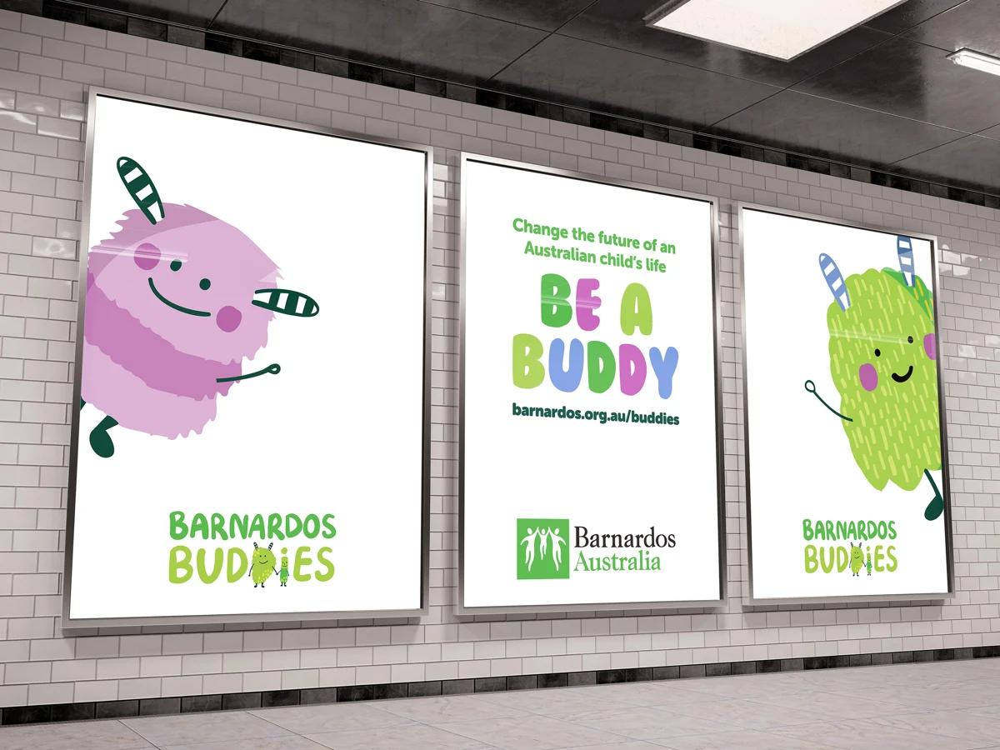
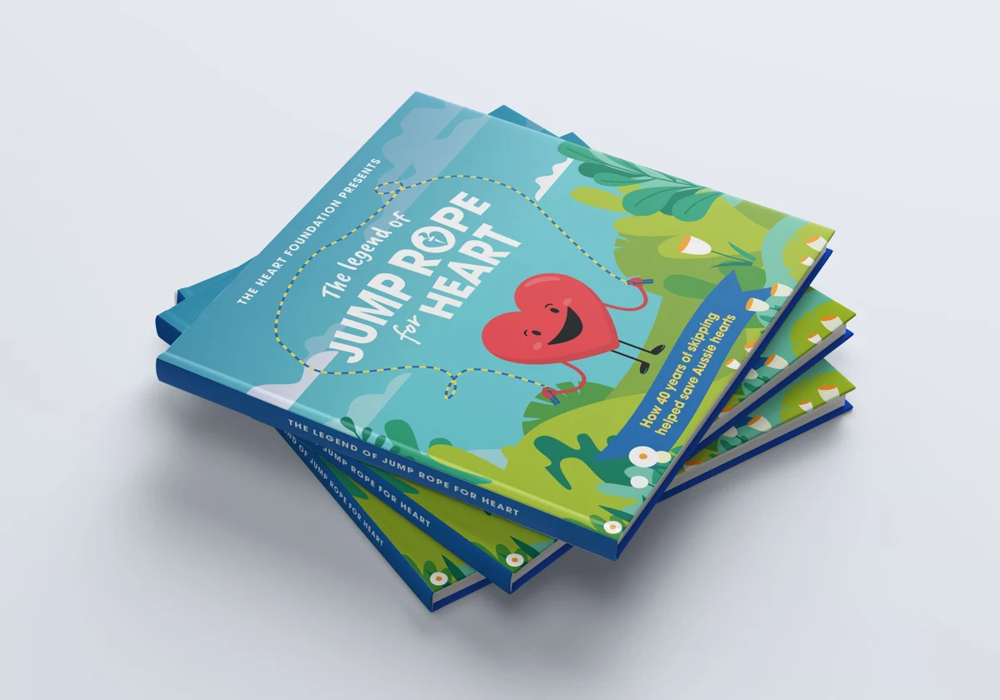
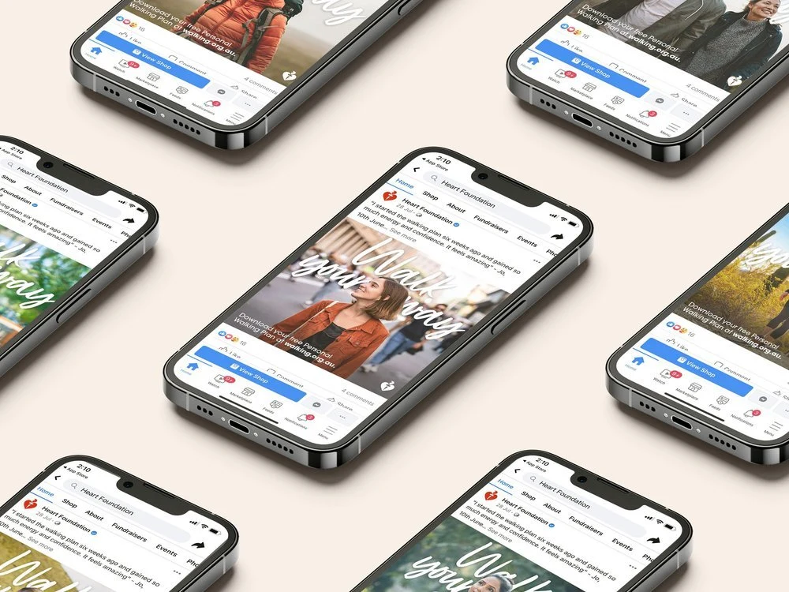
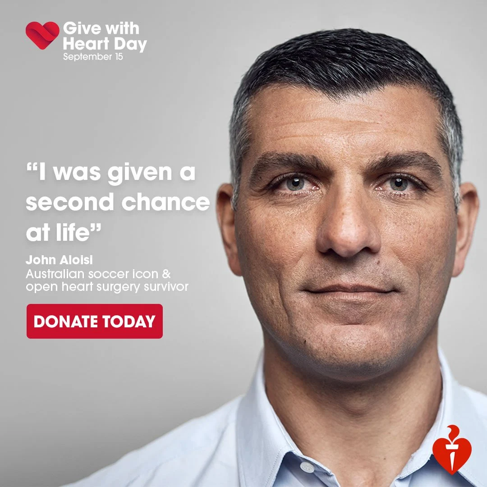

Jazz Farey
Selected Brand + Creative Work
Credits + projects
Zip: Money Your Way, That’s A Flex and creator work. allHearts. Barnardos Buddies. Jump Rope for Heart. Walk Your Way. Give with Heart Day and Heart Foundation PR.
Zip / VML Australia / motion design and animation: Robert Pregardt-Paur. allHearts creative: Megan Pope. Barnardos Buddies creative: Alana Indratheb. Heart Foundation campaign and production teams.
My contribution varies by project, from leading the work and teams to supporting creative direction and production. Full asset and credit list ↗
Hi, I’m Jazz.
I’m a brand and marketing leader who connects ideas, creative and commercial thinking. I’ve led brands, campaigns and product launches, and the teams that bring them to life.
Selected Work
01—04 / Zip Co.More selected work
Brand / Campaign / Product
allHearts
Brand + CommerceCreative: Megan Pope

Barnardos Buddies
Product + IdentityCreative: Alana Indratheb

Jump Rope for Heart
Campaign + PrintHeart Foundation

Walk Your Way
Creative + AcquisitionHeart Foundation

Give with Heart Day
Integrated CampaignHeart Foundation
What I’m building now
Better.
Recommendation intelligence and production.